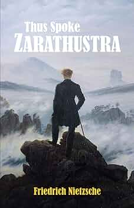
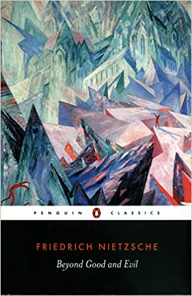
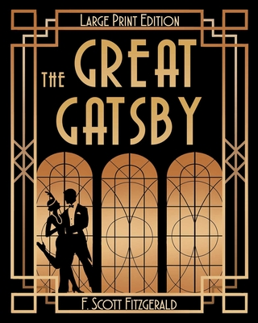
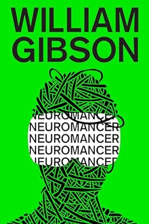

In the winter of 2022, I took a trip to Montreal, and it was absolutely freezing. I had a blast wandering around Old Montreal, checking out the cool old buildings and warming up with hot chocolate in cosy cafés. The food was amazing too – I tried poutine for the first time and loved it, and the nightlife was a lot of fun.
McDonald's is my favourite restaurant because it's quick, convenient, and consistently delicious. Plus, their fries and Big Macs are simply unbeatable!

I love munching on McDonald's French fries, especially when they're hot and crispy. Dipping them in ketchup just makes them even more irresistible!
| Name of the Book | Image of the Cover | Author | Summary |
|---|---|---|---|
| Thus Spoke Zarathustra |  | Nietzsche | A philosophical novel that explores the themes of individuality, morality, and the concept of the Übermensch. |
| Beyond Good and Evil |  | Nietzsche | A critical analysis of traditional morality and the philosophy of free spirits. |
| The Great Gatsby |  | Fitzgerald | A tragic story of Jay Gatsby and his unrequited love for Daisy Buchanan, set in the Roaring Twenties. |
| Neuromancer |  | Gibson | A groundbreaking cyberpunk novel that follows a washed-up computer hacker hired for one last job. |